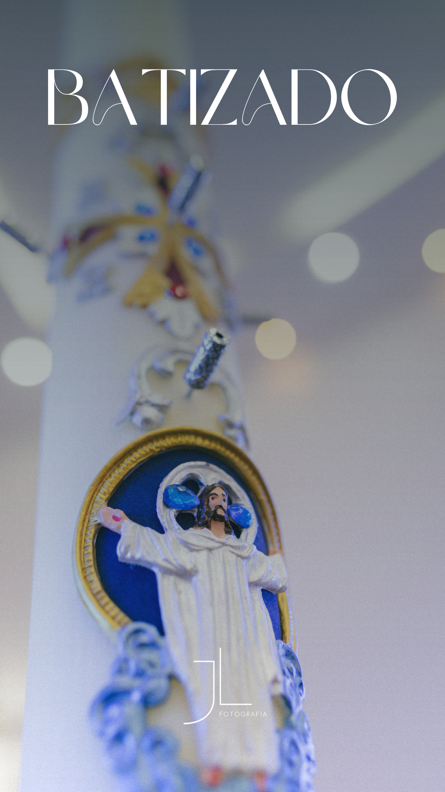
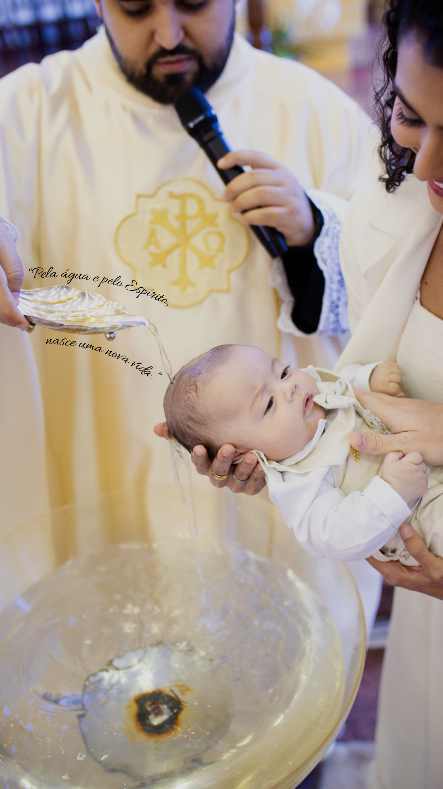
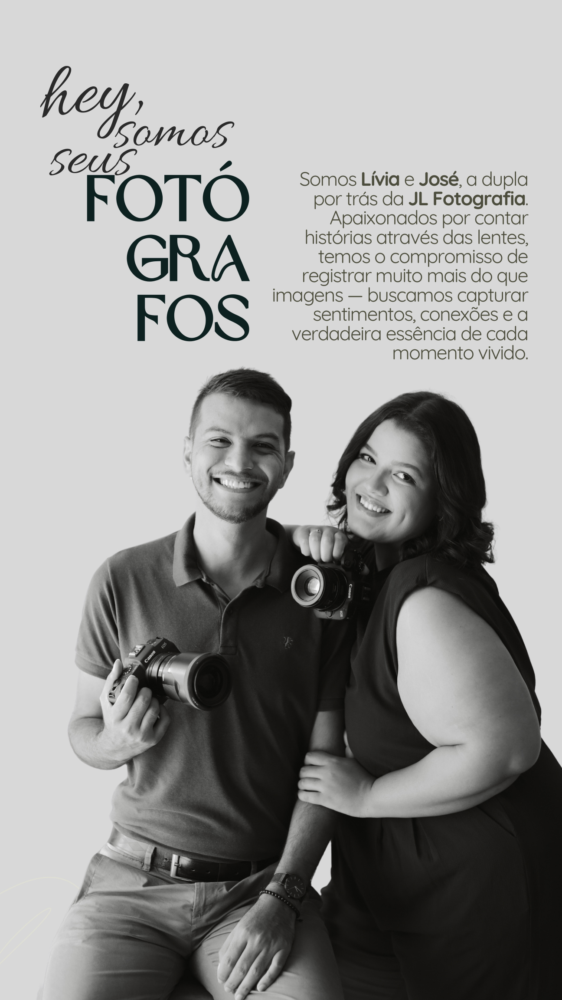
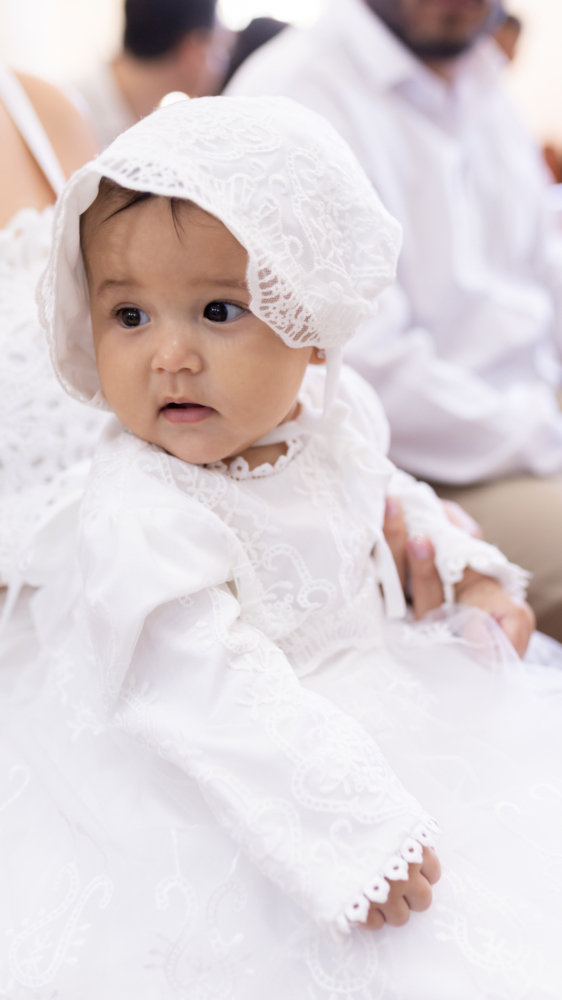
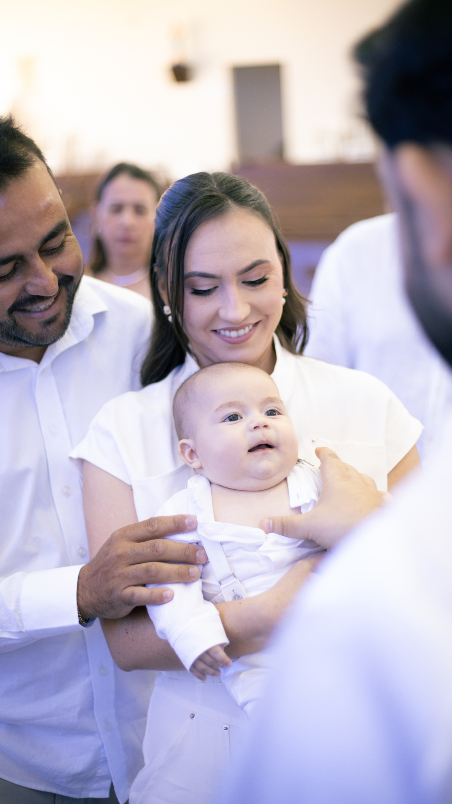

Chegada antecipada
Organização e alinhamento antes do início da celebração.

O Batismo é mais do que uma celebração: é o início de uma vida nova em Cristo. Nosso olhar acompanha esse momento com respeito, delicadeza e atenção ao que realmente importa.

Chegamos com antecedência, alinhamos os detalhes com a família e acompanhamos o ritmo da celebração sem interferir no momento. Nosso objetivo é registrar a água, a unção, a vela, os padrinhos, os pais e cada gesto que faz parte desse sacramento.
Mais do que criar imagens bonitas, queremos preservar a ternura, a fé e a emoção que envolvem o Batismo e que serão lembradas pela família por muitos anos.

Somos a dupla por trás da JL Fotografia. Em um sacramento tão importante, acreditamos que fotografar também exige sensibilidade: saber estar presente, respeitar o altar e perceber os pequenos gestos da família.
Trabalhamos de forma discreta e cuidadosa para que vocês vivam a celebração, enquanto nós preservamos em imagens a fé, a emoção e a história daquele dia.
A cobertura é pensada para preservar a solenidade da celebração e, ao mesmo tempo, guardar os pequenos gestos que fazem esse dia ser único para a criança e sua família.
Organização e alinhamento antes do início da celebração.
Registro respeitoso, sem interromper o rito ou chamar atenção.
Água, unção, vela, sinais do rito, pais, padrinhos e sacerdote.
Nos pacotes selecionados, reservamos um momento para retratos após a celebração.
Do registro essencial da celebração a uma experiência completa, com fotografias, vídeo e entrega física especial.
Para quem deseja guardar o essencial do sacramento de forma simples e acessível.
Mais cobertura, dois olhares e um momento reservado para fotografar toda a família na igreja.
Uma experiência completa para transformar o Batismo em uma memória física, visual e viva.

No pacote Premium, além das fotografias, o Batizado recebe um registro em vídeo feito especialmente para acompanhar o ritmo e a emoção da celebração.
A proposta é criar um filme curto e sensível, valorizando os gestos do rito, a família, os padrinhos e os detalhes que fazem parte desse dia — um conteúdo exclusivo, pensado para ser revisto e compartilhado.
Nos pacotes Médio e Premium, a experiência vai além da galeria digital. Preparamos uma entrega física para que esse sacramento também faça parte da casa e da história da família.
R$ 100 no agendamento. O restante pode ser pago até a data do Batizado.
Até 4x sem juros no cartão. Também é possível parcelar em até 12x com juros.
5% de desconto para pagamento em Pix, depósito ou dinheiro.
A seleção é enviada por link. Após a escolha, as imagens tratadas são entregues em até 10 a 15 dias úteis.

Conte para nós a data, a igreja e o horário do Batizado. Confirmamos a disponibilidade e ajudamos você a escolher o pacote ideal.
Consultar disponibilidade